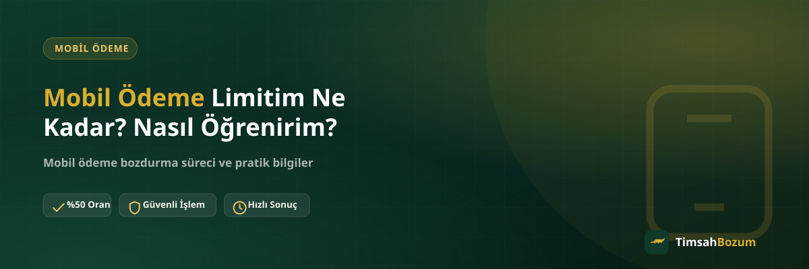

"Mobil ödeme limitim kaç TL?" sorusu, bozum işlemine başlamadan önce çoğu kullanıcının aklına takılan ilk sorulardan biri. Oysa bu bilgiye ulaşmak sanıldığı kadar karmaşık değil; sadece nereye bakman gerektiğini bilmen yeterli. Bu yazıda limitini nereden görebileceğini, uygulamada net bir rakam çıkmadığında bunun ne anlama geldiğini ve limit ile bozdurabileceğin bakiyenin neden aynı şey olmadığını anlatıyoruz.
Mobil Ödeme Limiti Ne İşe Yarar?
Mobil ödeme limiti, operatörünün hattına tanıdığı ve faturana yansıyabilecek üst harcama sınırıdır. Bu sınır sabit bir rakam değildir, hattın geçmişine göre operatör tarafından zaman içinde güncellenir. Limitin kendisini bilmek işlemi başlatmak için şart değil ama güncel bakiyeni doğru okuyabilmen için faydalı bir referans noktası sağlar.
Limitimi Operatör Uygulamasından Nasıl Görebilirim?
Güncel limitini görmenin en güvenilir yolu, hattının bağlı olduğu operatörün resmi mobil uygulaması. Bu bilgi genellikle ana ekranda kullanım özeti kartında ya da "Faturam", "Harcamalarım" gibi bir menü başlığının altında yer alır. Uygulamayı güncel tutmak ve hattınla giriş yapmış olmak, bu bilginin doğru görünmesi için ön koşul.
Uygulamada Net Bir Rakam Görünmüyorsa Ne Anlama Gelir?
Bazı kullanıcılar uygulamayı açtığında mobil ödemeyle ilgili herhangi bir rakam görmez ve bunu limitin sıfır olduğu şeklinde yorumlar. Oysa bu durum çoğunlukla özelliğin hatta henüz hiç açılmadığını gösterir, limitin sıfıra düşürüldüğünü değil. Özellikle yeni açılan hatlarda ya da mobil ödeme daha önce hiç kullanılmamışsa bu görünüm normaldir.
Limit ile Bakiye Arasındaki Fark Nedir?
Bu iki kavram sık karıştırılıyor ama aslında birbirinden bağımsız. Limit, operatörün hattına tanıdığı potansiyel üst sınırdır; bakiye ise o an hattında fiilen oluşmuş, bir harcama sonucu ortaya çıkmış tutardır. Yüksek bir limitin görünmesi otomatik olarak yüksek bir bakiyen olduğu anlamına gelmez, bakiye ancak gerçek bir kullanım gerçekleştiğinde oluşur. Bozum işlemine başlamadan önce baktığın rakamın limit mi yoksa bakiye mi olduğunu ayırt etmek, işlemin hangi tutar üzerinden ilerleyeceğini netleştirir.
Uygulamadan Bilgi Alamıyorsam Ne Yapmalıyım?
Uygulama üzerinden net bir sonuç alamadığın durumlarda operatörünün müşteri hizmetleri hattını aramak ya da operatör mağazasına gitmek bir alternatif. Operatöre özel adımlar ve iletişim yolları için Vodafone, Türk Telekom ve Turkcell sayfalarımıza göz atabilirsin. Her operatörün uygulama arayüzü ve menü isimlendirmesi biraz farklılık gösterse de mantık aynı: bilgi hattının kendi sistemine ait, TimsahBozum bu veriyi görüntülemez ya da değiştirmez.
Limit Bilgisini Bilmek Bozum İşlemi İçin Gerekli mi?
Hayır, bozum işlemini başlatmak için limitini bilmen şart değil. Mobil ödeme bozdurma sürecinde bizim için önemli olan, hattında o an fiilen oluşmuş bakiyenin güncel ekran görüntüsü. Limit bilgisi sadece kendi hattının genel çerçevesini anlaman açısından faydalı bir arka plan bilgisi; işlemin başlaması için ek bir şart oluşturmaz.
Limitim Zamanla Değişir mi, Bunu Takip Etmeli miyim?
Evet, limit operatör tarafından periyodik olarak yeniden değerlendirilebilen bir değer. Bu yüzden bugün gördüğün rakamın birkaç ay sonra aynı kalacağının garantisi yok. Eğer mobil ödemeyi düzenli kullanıyorsan, uygulamandan ara sıra kontrol etmek, hattında beklenmedik bir kısıtlama olup olmadığını erken fark etmene yardımcı olur.
Limit Bilgisini Kontrol Etmek İçin Doğru Zaman Var mı?
Limitini her an kontrol edebilirsin, buna dair bir kısıtlama yok. Ancak bozum işlemine başlamadan hemen önce hem limiti hem güncel bakiyeyi kontrol etmek, elindeki bilgilerin tazeliğinden emin olmanı sağlar. Özellikle o ay içinde mobil ödemeyi aktif kullandıysan, bakiye rakamı gün içinde değişebileceği için işlem öncesi son bir kez uygulamayı açıp bakiyeni yeniden görmek faydalı bir alışkanlık.
Sık Yapılan Yanlış Varsayımlar
En sık karşılaşılan yanlış algılardan biri, uygulamada rakam görünmediğinde "hattımda mobil ödeme tamamen yasaklandı" diye düşünmek. Oysa çoğu zaman bu, özelliğin henüz aktive edilmediğini gösterir. Bir diğer yanlış varsayım ise limit ile bozdurulabilecek tutarın aynı şey olduğunu düşünmek; yukarıda anlattığımız gibi bu ikisi tamamen farklı kavramlar ve birbirini otomatik olarak belirlemiyor.
Bakiye Ekran Görüntüsü Alırken Nelere Dikkat Etmelisin?
Limitini öğrendikten sonra asıl bozum işlemi için ihtiyacın olan şey, güncel bakiyeni gösteren okunaklı bir ekran görüntüsü. Görüntüyü alırken tutarın net göründüğünden, ekranın kırpılmadığından ve tarihin güncel olduğundan emin ol. Aylar önce alınmış bir ekran görüntüsü, o tarihten sonra hattında değişiklik olup olmadığı belli olmadığı için işlemi geciktirebilir. Mümkünse ekran görüntüsünü işleme başlamadan hemen önce, uygulamayı yeniden açarak tazele.
Bazı operatör uygulamaları bakiyeyi ana ekranda büyük puntoyla, bazıları ise bir alt menüde daha küçük gösterir. Ekran görüntüsünde sadece tutarın değil, hangi hizmete ait olduğunun (mobil ödeme bakiyesi) da anlaşılır olması, karşı taraftaki hattın bilgiyi doğru yorumlamasını kolaylaştırır. Belirsiz veya kesik bir görüntü yerine tam ekran ve net bir kayıt paylaşmak, işlemin ilk turda ilerlemesini sağlar.
TimsahBozum Bu Süreçte Neyle İlgilenir?
Açıkça belirtmek gerekirse, TimsahBozum limitin ne kadar olduğunu görüntüleme ya da değiştirme yetkisine sahip değil; bu tamamen operatör ile hat sahibi arasındaki bir konu. Bizim işimiz, hattında zaten oluşmuş mobil ödeme bakiyesini güncel oran üzerinden nakde çevirmek. Güncel oran genel bir referans olarak sitede yer alır, işlem öncesi güncel oranı WhatsApp'tan teyit etmek en sağlıklısı.
İlgili Yazılar
- Mobil Ödeme Limiti Nasıl Belirlenir?
- Mobil Ödeme Limiti Nasıl Artırılır?
- Mobil Ödeme Limitim Neden Kapalı, Nasıl Açılır?
Güncel bakiyeni gördükten sonra bozdurmak istersen, WhatsApp hattımıza yazarak sürecini başlatabilirsin.